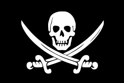

Golden Age of Piracy
1650s - 1730s

The Golden Age of Piracy is generally considered to have begin in the 1650s
with the exploits of famous Buccaneers such as Henry Morgan who is perhaps most
famous for the sacking of Panama in 1671.
However, true piracy did not reach its
peak until Benjamin Hornigold established the Pirate Republic in the fort at Nassau
(New Providence Island) in 1714.